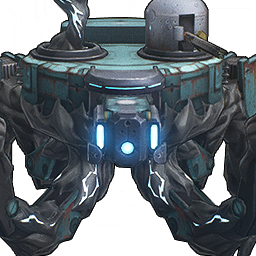

Autopuppet Scout

Element: Glacio
The Tacet Discord that parasitizes the Autopuppet Scout disguises itself with a rusty and damaged armor shell. It takes "patrol" as its duty, monitors all the movements in the city, and eliminates all potential threats.